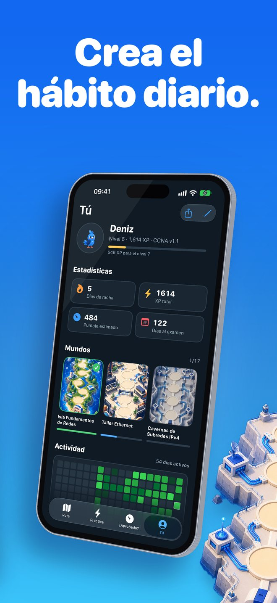
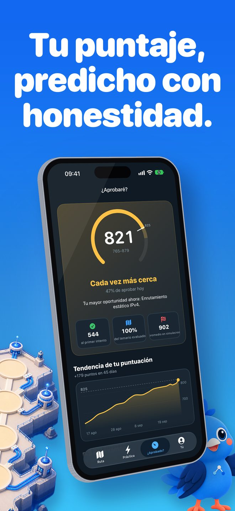

¿Qué es Linkwing?
Aprende redes desde cero, jugando, y llega al examen CCNA con confianza.
Linkwing te lleva de "¿qué es una dirección IP?" a prepararte para el CCNA 200-301, con lecciones cortas en lenguaje sencillo, un mapa ilustrado y Kavi, una cocotilla azul que vuela contigo de isla en isla.
Capturas de pantalla


Para quién es
- Principiantes que nunca han tocado una red
- Personas que quieren cambiar de carrera hacia TI
- Estudiantes de sistemas, informática o ingeniería
- Candidatos al examen CCNA que quieren practicar de verdad
Empieza desde cero
- 2 mundos para principiantes con 17 lecciones de pocos minutos
- Qué es una red, switch, router, firewall, LAN, WAN, direcciones IP y MAC, Wi-Fi, VLAN, cables, fibra, PoE, servidores, RAID, NAS y respaldos
- Analogías de la vida diaria y diagramas nativos
- Toca cualquier palabra resaltada y te la explicamos en sencillo
- Cada lección termina con preguntas fáciles que explican cada respuesta incorrecta
Un mapa que da ganas de seguir
- 15 mundos del examen en un mapa ilustrado, con Kavi volando de parada en parada
- Rachas, XP, insignias y misiones diarias para que estudiar sea un hábito
- Sesiones de dos minutos: ideales para el camión, el descanso o antes de dormir
Empieza en tu nivel
Dinos cuánto sabes. Si eres nuevo, comienzas en la primera lección. Si ya sabes algo, un chequeo adaptativo de 5 preguntas se salta lo que dominas.
Preparación honesta para el CCNA
- Más de 1,100 preguntas originales tipo examen: exhibiciones, elige dos, ordenar, relacionar y cálculos
- Más de 900 tarjetas con repetición espaciada
- 75 laboratorios de comandos IOS: escribes los comandos, y las abreviaturas funcionan
- Gimnasio de subneteo con ejercicios generados sin fin
- Simulacros con tiempo, ponderados como el temario del examen
- Cubre el CCNA 200-301 v1.1 y el v2.0 a partir del 3 de febrero de 2027
¿Aprobaré?
La pestaña Pasaré? te da una predicción de tu puntaje sobre 1000, pero solo después de 40 respuestas reales. Nada de números inventados al principio, y tampoco promesas de aprobar.
Además, un pronóstico para el día del examen te dice cuándo estarás listo a tu ritmo diario y cómo evoluciona tu puntaje.
Sin cuenta y sin conexión
Funciona sin internet y no necesitas crear una cuenta. La app está disponible en 8 idiomas: español, inglés, portugués, japonés, coreano, árabe, turco y chino simplificado.
Las lecciones para principiantes están en español; las lecciones de nivel examen muestran título y resumen en español con el texto completo en inglés, y las preguntas tipo examen y los laboratorios IOS están en inglés.
Linkwing Pro
Empieza gratis. Linkwing Pro es una suscripción opcional con renovación automática que desbloquea el contenido completo. Se renueva a menos que la canceles al menos 24 horas antes de que termine el periodo, y puedes administrarla o cancelarla en los ajustes de tu Cuenta de Apple.
Preguntas frecuentes
¿Qué es Linkwing?
Linkwing es una app para iPhone que enseña redes de computadoras desde cero y te prepara para el examen Cisco CCNA 200-301. Incluye 17 lecciones para principiantes en 2 mundos, un mapa ilustrado de 15 mundos del examen guiado por Kavi, una cocotilla azul, 1,136 preguntas originales tipo examen, 929 tarjetas, 75 laboratorios de comandos IOS, un gimnasio de subneteo y simulacros con tiempo. Requiere iOS 26 o posterior y la desarrolla Ata Tunc Bilge.
¿Linkwing es gratis?
Linkwing se descarga gratis y puedes empezar sin pagar. Linkwing Pro es una suscripción opcional con renovación automática que desbloquea el curso completo; puedes administrarla o cancelarla en los ajustes de tu Cuenta de Apple.
¿Son preguntas reales del examen CCNA?
No. Todas las preguntas de Linkwing son originales y están escritas al estilo del examen; no son preguntas filtradas ni dumps. El objetivo es que entiendas los temas, no que memorices respuestas.
¿Linkwing cubre el CCNA v2.0?
Sí. Linkwing cubre el CCNA 200-301 v1.1 (exámenes hasta el 2 de febrero de 2027) y el v2.0 (desde el 3 de febrero de 2027), y elige el temario según la fecha de tu examen. Confirma los detalles en la página oficial de temas del examen de Cisco.
¿Está en español y funciona sin internet?
Sí. La interfaz está disponible en 8 idiomas, incluido el español, y puedes cambiar de idioma dentro de la app. Las 17 lecciones para principiantes están totalmente en español, con los textos de los diagramas y un glosario de 60 términos que se explican con un toque. Las lecciones de nivel examen muestran título y resumen en español, con el texto completo en inglés. Las preguntas tipo examen y los laboratorios IOS están en inglés, porque el examen CCNA se ofrece en inglés y japonés. Linkwing funciona sin conexión y no necesitas crear una cuenta.